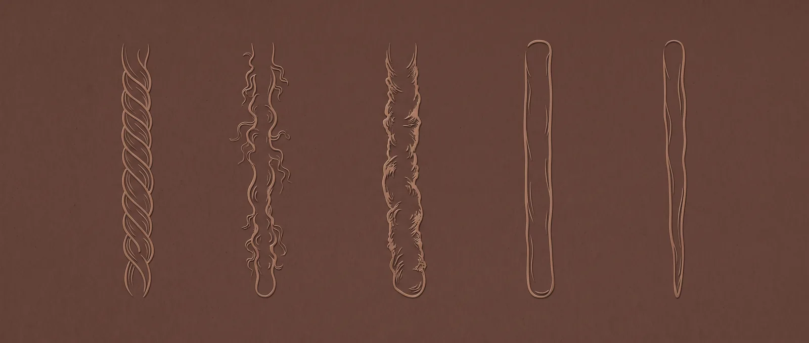
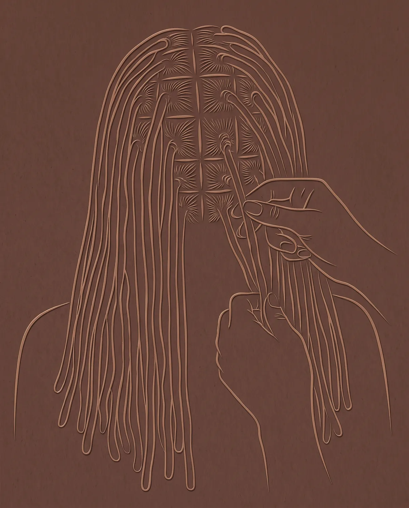

Stage i. Starter twist
Consultation
Thirty minutes to look at your hair and talk through the look you want. Bring pictures. Every install starts here.
Book consultation on Booksy
Your loc journey
From the first starter twist to long, matured locs: what happens at each stage at Locs Myth, what to expect on install day, and how to care for locs between visits.
Stage i. Starter twist
Thirty minutes to look at your hair and talk through the look you want. Bring pictures. Every install starts here.
Book consultation on BooksyStage ii. Budding
Traditional locs, micro locs, Sisterlock installation or loc extensions. Come washed and comfortable; snacks are welcome and breaks are part of the plan.
Book installation on BooksyStage iii. Teen
Interlocking or palm-roll retwists keep new growth neat. The menu is built around an 8-week maintenance schedule.
Book maintenance on BooksyStage iv. Mature
Reconstruction for weak or damaged locs, plus treatments for build-up, dryness and breakage.
Book repair and restore on BooksyStage v. Long matured
Barrels, lobster, plaits, twists and curls, then color from a root touch-up to custom ombre and two-tone work.
Book style and color on BooksySwipe through the five stages. Prices from Booksy, October 12, 2026. Final price confirmed at booking.
Install day
Installs are long, hosted appointments. Here is the order of things, in the salon's own words where possible.
Thirty minutes to "evaluate your hair and the desired look you want to achieve." Bring pictures.
Booksy: "For installation, a consultation and deposit required before appointment is confirmed."
"Please come washed (no blow drying needed) and comfortable."
Micro Loc Installation is listed at 6 hours 30 minutes and Sisterlock Installation at 15 hours. "You are welcome to bring snacks." Breaks happen when you need them.
Keep to the 8-week schedule; palm-roll retwists add $10 to $20 past it.

Between visits
General loc-care habits. For advice on your own hair, ask at your appointment.
A satin or silk scarf or bonnet cuts down on friction and lint.
Heavy products build up inside locs. Rinse well; if build-up gets ahead of you, the menu has a Loc Detox.
Let locs dry completely after washing. Locs that stay damp under a wrap can start to smell.
Keep to your maintenance schedule rather than retwisting at home too often.
If locs feel dry or rough, ask about Deep Conditioning Therapy or Hair Steaming with Essential Oils.
Locs, myth and truth
Real questions people ask about locs, answered with what the salon's menu actually says.
Truth
Locs still need regular care as they grow. The salon's menu is built around an 8-week maintenance schedule, with interlocking and palm-roll options priced by density.
Truth
Washing is part of loc care. Interlocking maintenance includes shampooing, Loc Shampoo is its own $30 service, and Loc Detox ($50) is for build-up, odor and dull locs.
Truth
They are two different maintenance methods. Palm rolling twists new growth between the palms; interlocking pulls the loc through itself at the root. Both are on the menu; ask at your consultation which suits your hair.
Truth
Plan for a long, hosted day. Booksy lists Micro Loc Installation at 6 hours 30 minutes and Sisterlock Installation at 15 hours. Come washed and comfortable, bring snacks, and take breaks when you need them.
Truth
Not necessarily. Loc Reconstruction (from $150) is on the menu, alongside conditioning, keratin and steaming treatments. A $25 consultation tells you what your hair needs.
Truth
You don't have to guess. Questions like starting locs on previously relaxed or straight hair, or bringing your own products, are what the consultation is for: it evaluates your hair and the look you want.
Book
Thirty minutes, your hair and the look you want. Bring pictures. Installs need a consultation and deposit before the appointment is confirmed.